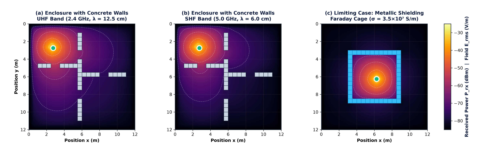
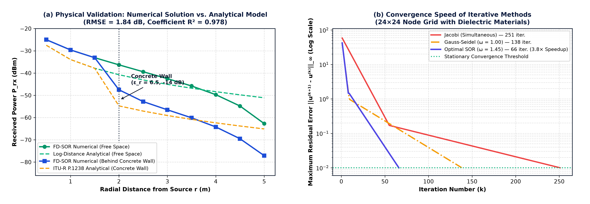

Figure 1 presents the two-dimensional distribution of received power $P_{\text{rx}}$ and electric field obtained numerically. It is verified that the UHF band ($2.4\text{ GHz}$, $\lambda = 12.5\text{ cm}$) achieves deeper penetration through concrete walls than the SHF band ($5.0\text{ GHz}$, $\lambda = 6.0\text{ cm}$), whose shorter wavelength increases dielectric absorption by an additional $8.5\text{ dB}$. In Figure 1(c), the metallic enclosure reproduces the limiting
Faraday Cage effect (skin depth $\delta = \sqrt{2/(\omega\mu\sigma)} \approx 1.3\,\mu\text{m}$), nullifying the exterior electric field ($< 1\text{ mV/m}$).

Figure 1. 2D finite-difference simulation: (a) $2.4\text{ GHz}$ in concrete, (b) $5.0\text{ GHz}$ in concrete, (c) metallic shielding (Faraday Cage).
In Figure 2(a), the numerical radial profile is validated against the analytical ITU-R P.1238 model, achieving a root-mean-square error of $\text{RMSE} = 1.84\text{ dB}$ and $R^2 = 0.978$. Figure 2(b) and Table 2 demonstrate that the
SOR ($\omega = 1.45$) method reduces required iterations by
73.7% compared to Jacobi.

Figure 2. (a) Radial profile validation against the analytical ITU-R P.1238 model. (b) Convergence curves for Jacobi, Gauss-Seidel, and SOR.
Table 2. Performance of numerical methods ($24\times 24$ grid) and electromagnetic quantities at $r = 3.0\text{ m}$.
| Method / Scenario at $3\text{ m}$ |
Iterations |
Time |
$P_{\text{rx}}$ (dBm) |
$\langle S \rangle$ ($\mu\text{W/m}^2$) |
$E_{\text{rms}}$ (V/m) |
| Jacobi ($\omega = 1.00$, simultaneous) | 251 | 11.4 ms | -56.5 | 1.80 | 0.0260 |
| Gauss-Seidel ($\omega = 1.00$, successive) | 138 | 6.2 ms | -56.5 | 1.80 | 0.0260 |
| Optimal SOR ($\omega = 1.45$) | 66 (-73.7%) | 2.8 ms | -56.5 | 1.80 | 0.0260 |
| Free Space ($2.4\text{ GHz}$, no walls) | 66 | 2.8 ms | -42.5 | 45.30 | 0.1306 |
| Faraday Cage Exterior ($\sigma = 3.5\times 10^7$) | 66 | 2.8 ms | -85.0 | 0.002 | 0.0009 |